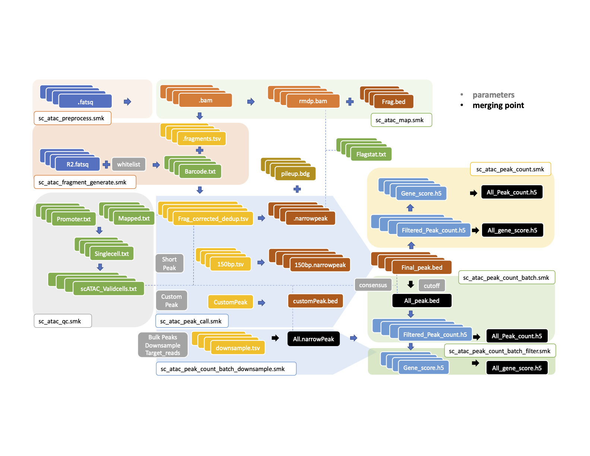

Last updated: 2021-06-08
Checks: 7 0
Knit directory: MAESTRO_documentation/
This reproducible R Markdown analysis was created with workflowr (version 1.6.2). The Checks tab describes the reproducibility checks that were applied when the results were created. The Past versions tab lists the development history.
Great! Since the R Markdown file has been committed to the Git repository, you know the exact version of the code that produced these results.
Great job! The global environment was empty. Objects defined in the global environment can affect the analysis in your R Markdown file in unknown ways. For reproduciblity it’s best to always run the code in an empty environment.
The command set.seed(20201223) was run prior to running the code in the R Markdown file. Setting a seed ensures that any results that rely on randomness, e.g. subsampling or permutations, are reproducible.
Great job! Recording the operating system, R version, and package versions is critical for reproducibility.
Nice! There were no cached chunks for this analysis, so you can be confident that you successfully produced the results during this run.
Great job! Using relative paths to the files within your workflowr project makes it easier to run your code on other machines.
Great! You are using Git for version control. Tracking code development and connecting the code version to the results is critical for reproducibility.
The results in this page were generated with repository version 256d788. See the Past versions tab to see a history of the changes made to the R Markdown and HTML files.
Note that you need to be careful to ensure that all relevant files for the analysis have been committed to Git prior to generating the results (you can use wflow_publish or wflow_git_commit). workflowr only checks the R Markdown file, but you know if there are other scripts or data files that it depends on. Below is the status of the Git repository when the results were generated:
Ignored files:
Ignored: .DS_Store
Ignored: .RData
Ignored: .Rhistory
Ignored: .Rproj.user/
Ignored: data/.DS_Store
Untracked files:
Untracked: .RDataTmp
Untracked: MAESTRO_documentation.Rproj
Untracked: atac_pbmc_500_nextgem_DiffPeaks.tsv
Untracked: atac_pbmc_500_nextgem_cluster.png
Untracked: code/Basic_Operations.R
Untracked: code/Downstream Analysis.R
Untracked: data/fast-scatac/
Untracked: data/scatac/
Untracked: data/scrna/
Untracked: pbmc_1k_v3.lisa/
Unstaged changes:
Deleted: MultiSample_scATACseq.Rproj
Note that any generated files, e.g. HTML, png, CSS, etc., are not included in this status report because it is ok for generated content to have uncommitted changes.
There are no past versions. Publish this analysis with wflow_publish() to start tracking its development.
MAESTRO scATAC-seq multi-sample pipeline is built upon the integration of single-sample analysis suits. By specifying different merging points, users can choose either to call bulk peaks or to call peaks by samples individually. At the end of each workflow, users will obtain both individual peak/gene matrix and merged peak/gene matrix. Each merging point has been shown in the below flow chart. The downstream analysis will then be conducted based on the output matrix. After collecting clustering information, the multi-sample pipeline will also split the fragment file by samples and clusters. This step was developed to facilitate the comparison between samples within each cluster.

| Version | Author | Date |
|---|---|---|
| d88199f | baigal628 | 2020-12-29 |
Create a list of accessions
$ touch SraAccList.txt
$ nano SraAccList.txt
Copy the following accession numbers in SraAccList.txt:
SRR11614703
SRR11614704
SRR11614705
SRR11614706
SRR11614707
SRR11614708#Install sratoolkit through conda
$ conda install -c bioconda sra-tools
$ prefetch --option-file SraAccList.txt
#Split .sra to .fastq.gz
$ cat SraAccList.txt | while read i
do
time fastq-dump --gzip -split-files ${i}.sra
echo "** ${i}.sra to fastq done **"
done
#Rename to 10X format
$ cat SraAccList.txt | while read i
do
mv ${i}_1*.gz ${i}_S1_L001_R1_001.fastq.gz
mv ${i}_2*.gz ${i}_S1_L001_R3_001.fastq.gz
mv ${i}_3*.gz ${i}_S1_L001_R2_001.fastq.gz
done
#I renamed each file based on sample information (Optional)
$ mv SRR11614703_S1_L001_R1_001.fastq.gz CLL0_S1_L001_R1_001.fastq.gz
$ conda activate MAESTRO
#Configure MAESTRO working directory
$ MAESTRO fast-scatac-init --batch --bulk_peaks --downsample \
--target_reads 5000000 --input_path time_data/data \
--platform 10x-genomics --format fastq --species GRCh38 \
--cores 16 --directory multi_scatac --deduplication "cell level" \
--whitelist whitelist/737K-cratac-v1.txt \
--peak_cutoff 100 --count_cutoff 1000 --frip_cutoff 0.2 --cell_cutoff 10 \
--giggleannotation annotations/giggle.all \
--clusterpeak \
--mapping chromap --index /liulab/galib/sc_CIDC/references/chromap/GRCh38_chromap.index \
--fasta /liulab/galib/sc_CIDC/references/Refdata_scATAC_MAESTRO_GRCh38_1.1.0/GRCh38_genome.fa \
--rpmodel Enhanced --genedistance 10000 \
--annotation --method RP-based --signature human.immune.CIBERSORT
$ cd multi_scatac
#Configure sample.json file
$ MAESTRO samples-init --assay_type scatac --data_type fastq --data_dir time_data/data/To get a full Description of command-line options
$ MAESTRO samples-init -h
usage: MAESTRO samples-init [-h] [--assay_type ASSAY_TYPE] [--data_type DATA_TYPE]
[--data_dir DATA_DIR]
optional arguments:
-h, --help show this help message and exit.
Input files arguments:
--assay_type ASSAY_TYPE
Required. type of assay: either scatac or scrna.
--data_type DATA_TYPE
Required. type of data: either fastq or fragment.
--data_dir DATA_DIR Required. the FULL path to the fastq folder or the fragment folder.
$ MAESTRO multi-scatac-init -h
usage: MAESTRO multi-scatac-init [-h] [--batch] [--consensus_peaks]
[--cutoff_samples CUTOFF_SAMPLES] [--bulk_peaks] [--downsample]
[--target_reads TARGET_READS] [--input_path INPUT_PATH]
[--species {GRCh38,GRCm38}] [--platform {10x-genomics,sci-ATAC-seq,microfluidic}]
[--format {fastq,fragments,bam}] [--deduplication {cell level,bulk level}]
[--giggleannotation GIGGLEANNOTATION] [--fasta FASTA] [--whitelist WHITELIST]
[--cores CORES] [--directory DIRECTORY] [--annotation]
[--method {RP-based,peak-based,both}] [--signature SIGNATURE] [--custompeaks]
[--custompeak_file CUSTOMPEAK_FILE] [--shortpeaks] [--clusterpeak]
[--rpmodel {Simple,Enhanced}] [--genedistance GENEDISTANCE] [--peak_cutoff PEAK_CUTOFF]
[--count_cutoff COUNT_CUTOFF] [--frip_cutoff FRIP_CUTOFF] [--cell_cutoff CELL_CUTOFF]$ snakemake -np
$ nohup snakemake -j 8 > 10X_PBMC.out &$ ls Result
Analysis Benchmark Log minimap2 QC Report
$ ls Result/Analysis
Batch CLL0 CLL24 CLL8 Cluster PBMC0 PBMC24 PBMC8
sessionInfo()R version 4.0.5 (2021-03-31)
Platform: x86_64-apple-darwin17.0 (64-bit)
Running under: macOS Big Sur 10.16
Matrix products: default
BLAS: /Library/Frameworks/R.framework/Versions/4.0/Resources/lib/libRblas.dylib
LAPACK: /Library/Frameworks/R.framework/Versions/4.0/Resources/lib/libRlapack.dylib
locale:
[1] en_US.UTF-8/en_US.UTF-8/en_US.UTF-8/C/en_US.UTF-8/en_US.UTF-8
attached base packages:
[1] stats graphics grDevices utils datasets methods base
other attached packages:
[1] workflowr_1.6.2
loaded via a namespace (and not attached):
[1] Rcpp_1.0.6 whisker_0.4 knitr_1.33 magrittr_2.0.1
[5] R6_2.5.0 rlang_0.4.10 fansi_0.4.2 highr_0.9
[9] stringr_1.4.0 tools_4.0.5 xfun_0.22 utf8_1.2.1
[13] git2r_0.28.0 jquerylib_0.1.4 htmltools_0.5.1.1 ellipsis_0.3.1
[17] rprojroot_2.0.2 yaml_2.2.1 digest_0.6.27 tibble_3.1.1
[21] lifecycle_1.0.0 crayon_1.4.1 later_1.2.0 sass_0.3.1
[25] vctrs_0.3.7 promises_1.2.0.1 fs_1.5.0 glue_1.4.2
[29] evaluate_0.14 rmarkdown_2.7 stringi_1.5.3 bslib_0.2.4
[33] compiler_4.0.5 pillar_1.6.0 jsonlite_1.7.2 httpuv_1.6.0
[37] pkgconfig_2.0.3